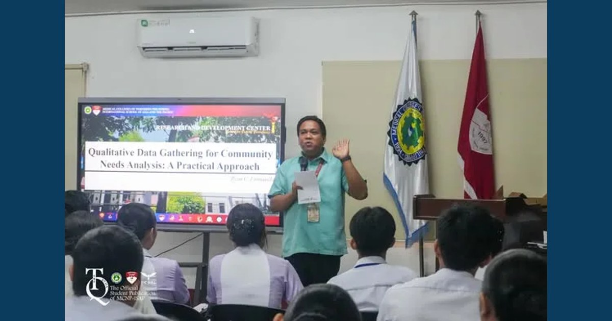

Equipping Students for Meaningful Community Engagement

The MCNP–ISAP Community Extension Services Office conducted the seminar and field orientation titled “Listening to the Community: Qualitative Data Gathering for Community Needs Analysis: A Practical Approach” on August 24 at Amphitheater 3.
Read full article